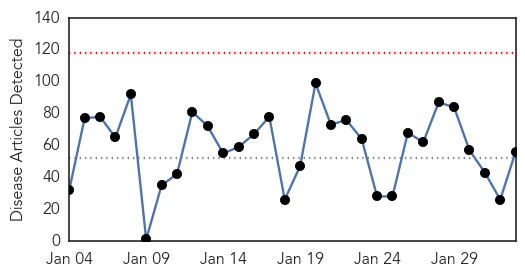
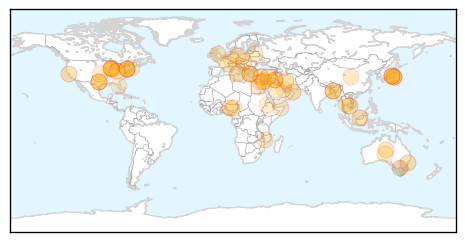

Measles
30-Day Web Trend
25 alerts, 0 warnings

30-Day Twitter Trend
4 alerts, 0 warnings

Article Locations

Article Confidences

Top Articles:
- 0.993
- Alabama pediatricians join Public Health in urging immunization for measles and other vaccine-preventable diseases
- 0.993
- U.S. measles cases now exceed 100
- 0.992
- Those who have suffered with measles join health officials to urge vaccinations
- 0.992
- More Measles Cases Seen in January Alone Than in a Typical Year
- 0.991
- Measles Outbreak Hits 102 Cases
- 0.991
- Nigerian writer Elnathan John trolls 'measles-ravaged America' on Twitter
- 0.988
- Idaho pediatricians warn about measles outbreak
- 0.987
- Here's how much more contagious measles is than Ebola
- 0.986
- Why Even Vaccinated People Can Catch Measles
- 0.984
- Toronto Reports 4 Measles Cases, Admits There Are Likely More
- 0.979
- U.S. measles outbreak growing, CDC says - Story
- 0.979
- Doctors continue urging measles vaccines after CDC warning
- 0.977
- Officials report first suspected cases of Measles in Washoe County
- 0.973
- How One Person Can Set Off a Measles Outbreak
- 0.972
- Arizona tracking measles as Super Bowl fans arrive
- 0.970
- Measles shows it really is a small world
- 0.970
- Measles outbreak infects 102
- 0.970
- Experts: Measles outbreak likely in state
- 0.970
- How to prevent a measles outbreak in your buildings
- 0.969
- Contagion in the Herd How One Person Can Set Off a Measles Outbreak
- 0.967
- Florida residents urged to get vaccinated against measles
- 0.965
- Measles Is A Killer: It Took 145,000 Lives Worldwide Last Year
- 0.962
- KFVS12 News & Weather Cape Girardeau, Carbondale, Poplar Bluff
- 0.962
- More measles cases found in California
- 0.962
- Parents, vaccinate your children against measles
- 0.962
- Measles Outbreaks and Vaccines
- 0.959
- Backlash Grows Against Vaccine Opponents
- 0.956
- Slowing rate of measles shots worries Oregon health official
- 0.953
- More than 100 confirmed cases of measles in the U.S., CDC says
- 0.952
- CDC urges measles vaccinations amid nationwide outbreak; 100 cases confirmed so far
- 0.952
- CDC urges measles vaccinations amid nationwide outbreak; 100 cases confirmed so far
- 0.952
- CDC urges measles vaccinations amid nationwide
- 0.944
- Experts say measles could reach state
- 0.942
- Measles outbreak in the US: Obama urges parents to vaccinate children
- 0.939
- CDC 'Very Concerned' About Possibility Of Larger Measles Outbreak In US
- 0.938
- Four measles cases confirmed in Toronto
- 0.919
- 2 measles cases unconfirmed pending lab work
- 0.916
- Obama to parents doubting ‘indisputable’ science: ‘Get your kids vaccinated’
- 0.914
- Measles outbreak: California cases up by one to 92
- 0.912
- Bay Area health officer issues call to get vaccinated against measles
- 0.912
- Berkeley health officer issues call to get vaccinated against measles
- 0.905
- Student with measles rode Amtrak train from New York Penn Station; U.S. cases top 100
- 0.901
- Doctors Concerned About Measles Making A Comeback Nationwide
- 0.889
- 4% of Denton County students opt out of measles shot
- 0.889
- Experts back need for measles vaccine
- 0.879
- Charted: One unvaccinated person undermines the efforts of everyone else
- 0.877
- Doctors urge measles vaccine as Mardi Gras approaches - KATC.com
- 0.870
- Officials encourage vaccinations in wake of measles outbreak
- 0.853
- Measles outbreak re-sparks vaccine debate
- 0.851
- Measles outbreak raises issues for colleges
Showing top 50 articles...
Top Tweets:
- 0.580
- Toronto Public Health is investigating 4 measles cases - 2 adults, 2 children. Cases seem unlinked; source not known. http://t.co/Ty2PmRBKa2
Unknown
30-Day Web Trend
0 alerts, 0 warnings

30-Day Twitter Trend
4 alerts, 0 warnings

Article Locations
Article Confidences
Top Articles:
- 0.960
- Reno Tahoe News Weather, Video -
- 0.933
- 2 die of Nipah virus in Naogaon
- 0.918
- Health agency officials respond to STD outbreak
- 0.917
- Chicago Tribune
- 0.917
- Chicago Tribune
- 0.917
- Chicago Tribune
- 0.917
- Chicago Tribune
- 0.917
- Chicago Tribune
- 0.917
- Chicago Tribune
- 0.917
- Chicago Tribune
- 0.917
- Chicago Tribune
- 0.917
- Chicago Tribune
- 0.917
- Chicago Tribune
- 0.917
- Chicago Tribune
- 0.917
- Chicago Tribune
- 0.917
- Chicago Tribune
- 0.917
- Chicago Tribune
- 0.917
- Chicago Tribune
- 0.917
- Chicago Tribune
- 0.917
- Chicago Tribune
- 0.917
- Chicago Tribune
- 0.917
- Chicago Tribune
- 0.917
- Chicago Tribune
- 0.917
- Chicago Tribune
- 0.917
- Chicago Tribune
- 0.915
- experts, National, Phnom Penh Post
- 0.871
- CSIRO employee's claim her water was contaminated with faeces rejected by tribunal
- 0.866
- Merkel says ceasefire must be restored in Ukraine
- 0.808
- West Texas News
- 0.751
- Warning over syphilis outbreak in Central Australia
- 0.734
- Crises abound in Noakhali hospital
- 0.726
- Multi Drug Resistant Bacteria Hits German Hospital, Kills 11
- 0.713
- 'Atypical' case of mad cow disease confirmed in Norway
- 0.673
- The Westside StoryThe Westside Story
- 0.673
- The Westside StoryThe Westside Story
- 0.669
- Insurer responds to ASIC concerns
- 0.626
- WHO donates medicines, medical instruments to Donetsk region
- 0.619
- Egypt: RRP6 Monthly Update - December 2014: Health - Egypt
- 0.613
- UN stepping up humanitarian efforts in Malawi’s flood-hit areas - Malawi
- 0.602
- Criticised Cameron says Saudi tip-off ‘saved British lives’
- 0.602
- DSK trial to offer ‘great show’, says brothel owner
- 0.602
- Iran launches Holocaust denial cartoon contest
- 0.602
- Head of UN Gaza inquiry to quit over Israeli criticism
- 0.602
- Greece’s anti-austerity drive gets boost from Washington
- 0.602
- Far right wins first round of French by-election
- 0.602
- Al-Jazeera journalist's colleagues still held in Egypt
- 0.602
- Egypt sentences 183 Brotherhood supporters to death
- 0.602
- Bomb rocks Nigerian city minutes after presidential rally
- 0.602
- ‘Accountant of Auschwitz’ to go on trial over camp deaths
- 0.596
- No reasons for ASF existence in Belarus now
Showing top 50 articles...
Top Tweets:
- 0.526
- En Walmart no se compra.
- 0.517
- RT: ISG - flu immunisation or masking if granted exemption for all health and residential care workers